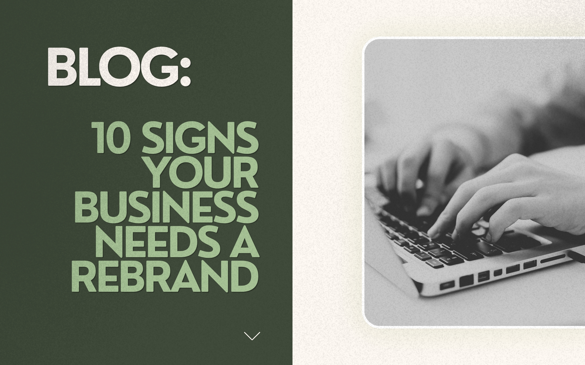

10 Signs Your Business Needs a Rebrand (And What It Really Costs)

Your brand is often the first thing a customer ever meets. Before they read a word of your website or speak to you on the phone, they’ve already judged your logo, your colours and the overall feel of your business.
The tricky part is that brands don’t age overnight. They age quietly — a tweak here, a new service there — until one day the brand you launched with no longer fits the business you’ve become.
If you’ve had a nagging feeling about yours, this one’s for you: the ten clearest signs a business needs a rebrand, how to tell a rebrand from a lighter-touch refresh, and what each option really costs.
The short answer
A professional rebrand in the UK typically runs from a few hundred pounds for logo work to several thousand for a full identity — our own branding packages start at £449, with complete brand-plus-web work from £1,195.
But cost is the wrong first question. The right one is whether your brand still fits the business you’re running today. Here’s how to tell.
First, the difference: rebrand vs brand refresh
The rebrand vs brand refresh question comes up in almost every conversation we have with business owners, and it’s worth settling before anything else.
A brand refresh updates how you look while keeping the same underlying brand identity. Think sharpened logo, an updated colour palette, modern typography, better photography — the things customers recognise stay recognisable. A refresh is right when the business itself hasn’t changed, but the presentation has fallen behind.
A rebrand goes deeper. It reshapes the strategy behind the identity: who you serve, how you position yourself, sometimes even your name. The visuals change, but as the output of new thinking rather than a new coat of paint.
A simple rule of thumb: if your audience, offering or ambition has changed, you need a rebrand. If only the look has aged, a refresh will do.
The 10 signs your business needs a rebrand
1. Your brand no longer looks like the business you’ve become
The brand you launched with was built for the business you were then — maybe a one-person operation with a handful of local clients. If you’ve since grown, moved upmarket or taken on bigger contracts, a homemade identity can actively undercut you. When your brand sells you short in front of the customers you actually want, that’s the clearest rebrand signal there is.
2. You avoid handing out your own business card
This is the honest test. Do you slightly wince when someone asks for your website address? Do you email your portfolio rather than send people to your homepage? When owners start quietly apologising for their own branding — “we’re having it redone soon, actually” — the decision has usually already been made. They just haven’t committed to it yet.
3. You look like every competitor in your market
Scroll through five of your competitors’ websites. If you could swap logos between them and nobody would notice, you have a differentiation problem — and it’s usually caused by template design. A custom logo is built around your business; a template logo merely fits your category. Blending in is comfortable, but invisible doesn’t win enquiries.
4. Your ideal customer has changed — but your brand hasn’t
Maybe you started out serving budget-conscious start-ups and now work with established companies. Maybe you’ve moved from residential to commercial work. When your brand was built to appeal to an audience you no longer want, every marketing pound works harder than it should. A rebrand realigns who you’re talking to with how you come across.
5. Every touchpoint looks different
Your van has one logo. Your invoices have another. The website is a third colour of green, the social pages are a slightly different blue, and the newest team member’s email signature does its own thing. Inconsistency doesn’t just look untidy — customers subconsciously read fragmented branding as a fragmented business. A rebrand (or a well-run refresh) fixes this with one system used everywhere.
6. You’ve added services your brand says nothing about
Brands often lag behind the business. You added a new service line two years ago, but your name, tagline or positioning still describes only the original offering — so new customers never realise you do it. If you regularly have to explain “we actually do that too”, your brand is hiding part of your business from the people searching for it.
7. Your first impression online falls flat
Most journeys now start on a phone, and customers form an opinion in seconds. If your site looks dated next to competitors, if engagement on your posts is quietly declining, or if people mention they “didn’t realise you were still going”, your brand is ageing you. Perceptions drift slowly, then suddenly — and the market notices long before you do.
8. You’ve merged, moved or changed ownership
Mergers, acquisitions, takeovers and relocations all change what a business is. Inheriting a name you don’t love, or now representing two combined companies under one roof, means the old identity can’t carry the weight. These situations almost always call for a genuine rebrand rather than a cosmetic touch-up, because the story underneath has genuinely changed.
9. Your brand doesn’t work properly on a small screen
Technical problems are a sign too. A detailed logo designed in 2009 might turn to mush as a social avatar. Colours chosen for print can look muddy on screen. Files might only exist in low-resolution formats nobody can cleanly reuse. Part of what makes a good logo today is how it scales — and if yours was built before mobile-first was the norm, it’s worth auditing how it actually behaves across devices.
10. Customers keep getting the wrong idea
Finally, the subtle one: the brand attracts the wrong people, or repels the right ones. You’re constantly asked “do you do cheap logos?” when you do full brand strategies, or customers assume you’re a national chain when you’re a local studio that knows Rotherham inside out. When perception repeatedly misses reality, no amount of explaining fixes it — the brand itself needs to change the story.
What does a rebrand really cost in the UK?
Honest answer: it depends on scope. So rather than vague industry ranges, here’s what branding actually costs with us — every package 100% custom, no templates:
| Package | What you get | Price |
|---|---|---|
| Logo Basic | 2 logo concepts, colour palette, logo files, 2 revision rounds | £249 |
| Logo Premium | 3 logo concepts, full logo set (primary, secondary & icon), font pairing, all file types, 3 revision rounds | £399 |
| Branding Starter | Moodboard, primary logo + icon, colours & fonts, final files | £449 |
| Branding Growth | Everything in Starter, plus secondary logo, mini brand guide, social graphics + business card | £529 |
| Branding Signature (most popular) | Full logo suite, brand guidelines, business card + email signature, launch templates | £719 |
| Brand Experience | Everything in Signature, plus brand strategy & tone of voice, social template pack, one-page website + 30 days support | £1,195 |
What moves the price up from there is rollout, not design: vehicle livery, signage, packaging and print runs all add cost, and city agency fees for equivalent work typically start around £3,000+. And if you’re rebranding because the website is the dated part, pair this with our guide to how much a website costs in the UK.
Not ready to commit? Our £150 Brand Clarity session gives you a sample design direction for your business — and the £150 comes off the project when you continue.
The 60-second recap
If you recognised yourself in three or more of these signs, your brand is probably holding the business back rather than building it up. Decide rebrand vs refresh first — strategy before visuals, always.
Frequently asked questions
How long does a rebrand take?
For a small business working with a studio, expect two to four weeks for an identity, longer if a full website rollout is included. The strategy conversations at the start matter more than the design time, so don’t rush them.
Will a rebrand hurt my Google rankings?
Not if it’s done carefully. Updating your visuals and messaging doesn’t affect rankings at all. Risks only appear if you change your domain or business name — those need proper 301 redirects and updated listings. Keep the same domain and your SEO travels with you.
Can we rebrand without confusing existing customers?
Yes — most clients keep recognisable anchors (a colour, a name, the shape of the logo) and roll the change out in phases: website and social first, print and signage as they naturally need reprinting. Familiarity fades far slower than people fear, especially when the change is explained with a short “here’s why” post.
Rebrand or refresh — which do I need?
If your audience, offering or ambition has changed, it’s a rebrand. If the business is the same but the look has aged, a refresh will do. Still unsure? Ask us — we’ll give you an honest answer even if that answer is “don’t spend the money yet”.
The bottom line
A brand that no longer fits quietly costs you enquiries every single week. The businesses that treat branding as an investment, not a decoration, are the ones that get recognised, remembered and chosen.
Recognised yourself in a few of these?
Send us your current brand and tell us where the business is heading. We’ll come back with a fixed, no-pressure quote — and honest advice even if the answer is “you’re not ready for a rebrand”.
Nine3 Designs · Swinton, Rotherham ·
Websites, branding & marketing for UK businesses
Your Vision. Our Design.